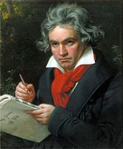
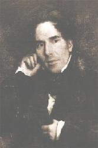

|
|
【萬有屬你】 |
|
1 All things are yours! We make that true 2 ""Give out of love, "" your Word commands. 3 O what a joy to give and then, 4 All things are yours! We make that true
|
萬有屬你榮神益人，我願奉獻你賜厚恩。 |
|
https://digitalsongsandhymns.com/songs/1813
|
|
|
|
|


All Things Are Thine; No Gift Have We (Germany) https://youtu.be/Akwi8elVIbU -
https://youtu.be/BWndR8mRPWM
| Text: | All Things Are Yours |
| Author: | Bryan Jeffery Leech |
| Tune: | GERMANY |
| Short Name: | Bryan Jeffery Leech |
| Full Name: | Leech, Bryan Jeffery, 1931- |
| Birth Year: | 1931 |

Bryan Jeffrey Leech was born in Middlesex, England in 1931. He came to the United States in 1955 and studied at Barrington College and North Park Seminary. He was ordained in 1961 and served in the Covenant Church. He composed more than 500 songs.
Dianne Shapiro
http://www.hymntime.com/tch/bio/l/e/e/c/leech_bj.htm
http://www.pietisten.org/xxx/2/bryan_jeffery_leech.html
Tune Information
| Title: | GERMANY (Gardiner) |
| Arranger: | William Gardiner |
| Composer: | Ludwig van Beethoven |
| Meter: | 8.8.8.8 |
| Incipit: | 51712 56711 17627 |
| Key: | A♭ Major |
| Source: | William Gardiner's Sacred Melodies, 1815 |
| Copyright: | Public Domain |


Bryan Leech

- Birth: May 14, 1931, Buckhurst Hill, Essex, England
Bryan Jeffery Leech was born in Buckhurst Hill Essex, England in 1931. Educated in England, he came to the U.S. in 1955, receiving his B.A. from Barrington College and, after attending North Park Seminary in Chicago, was ordained in the Evangelical Covenant Church. He served pastorates in Boston, Massachusetts, Montclair, New Jersey, San Francisco and Santa Barbara from 1958 to 1975, and is now Minister of Congregational Care and Radio at First Covenant Church, Oakland, California.
Leech is the author of some 250 songs and anthems. His songs have been recorded and performed by Norma Zimmer, Paul Sandberg, The Hour of Power Choir from the Crystal Cathedral, the choir of the Hollywood Presbyterian Church, the choirs of St. Mary’s Cathedral and Grace Cathedral, San Francisco, and very recently the Roger Wagner Chorale in their CD recording of "No Longer a Baby. He has been published by Lorenz, Theodore Presser, Lillenas, Columbia Pictures Music, Warner Brothers, Fred Bock Music, Hope Publishing, and Pavanne. To view several more of Rev. Leech's hymns, we suggest you go to the Covenant Hymnal published in 1996 by Covenant publications, 5101 N. Francisco, Chicago, IL 60625.
https://songsandhymns.org/people/detail/bryan-leech
History of Hymns: "Come, Share the Lord"
"Come, Share the Lord"
Bryan Jeffery Leech
The Faith We Sing, No. 2269
 |
|
Bryan Jeffery Leech |
We gather here in Jesus’ name,
his love is burning in our hearts like living flame;
for through the loving Son the Father makes us one:
Come, take the bread;
come, drink the wine;
come, share the Lord.*
Some hymns seem to flow immediately from the author’s pen, while others
require months of gestation. The latter is the case with “Come, Share the
Lord,” by Bryan Jeffery Leech (b. 1931), who wrote both text and music.
The composer is a native of Buckhurst Hill, Essex, England, who moved to the
United States in 1955. His communion hymn, “Come, Share the Lord,” has
become not only his most frequently used hymn, but also a favorite hymn
during the Lord’s Supper, especially among evangelical congregations.
Mr. Leech provides us with a background on his struggle to compose the text
of this hymn:
“In the autumn of 1982, I made an inner resolve to write a communion anthem
and promptly forgot about it. During Christmas with my family in England, I
invented a melody at the piano, but my mind was barren of any lyric ideas.
“One hot summer day, while visiting a musician friend in Simi Valley,
Calif., I played the setting and asked him to react to it. After repeating
it, he thought a moment and then said, ‘It’s obvious: Holy Communion.’ I
went home and within an hour the words were complete. In the anthem
arrangement by Roland Tabell it has become my most popular song to date.”
In reflecting on the text, the author’s theology of communion unfolds.
Sharing the Lord’s Supper is a response to the “burning in our hearts” for
the love of Christ who “makes us one.”
In the stanzas that follow we find that this is an open table where “No one
is a stranger” and “everyone belongs.” Furthermore, this is a table where we
“find... forgiveness” and “we in turn forgive all wrongs.”
The author places this celebration in the context of the post-Resurrection
appearances of Christ with his followers. The second stanza begins with a
reflection on passages like Luke 24:13-27 (the appearance of Christ on the
road to Emmaus) and the multiple post-Resurrection appearances in John 20
and 21: “He joins us here, he breaks the bread/ the Lord who pours the cup
is risen from the dead.”
This stanza takes the relationship of those gathered at the table a step
further. This is not only a table where there are no strangers and “everyone
belongsp;” in the sharing of communion, “We are now a family of which the
Lord is head.”
Bryan Jeffrey Leech received his education at The London Bible College in
England, and at Barrington College in Massachusetts and North Park Seminary
in Chicago. He was ordained in 1959 in the Evangelical Covenant
denomination, and has served pastorates in Massachusetts, New Jersey and
California.
Mr. Leech is pastor emeritus at First Covenant Church in Oakland, Calif. He
has composed over 500 songs, hymns, anthems and cantatas.
He was co-editor for the evangelical collection, Hymns for the
Family of God, and author of the book, Lift My
Spirits Lord: Prayers of a Struggling Christian. He is also the
creator of the lyrics, books and musical scores for several biblically based
musical plays, and has written two books for children.
The author succeeds beautifully in communicating a sense of cosmic time that
surrounds all who share this meal. In this hymn we recall the
post-Resurrection meals as a biblical witness of the past; we share the meal
with Christ in our midst in the present; finally, “we anticipate the feast
for which we wait” in the future.
The fullness of communion comes for those who understand that at the moment
of this meal, time—past, present and future—collapses into that single
moment.
*©1984, 1987 Fred Bock Music Co. All rights reserved. Used by permission.
Dr. Hawn is professor of sacred music at Perkins School of Theology.
https://www.umcdiscipleship.org/resources/history-of-hymns-come-share-the-lord